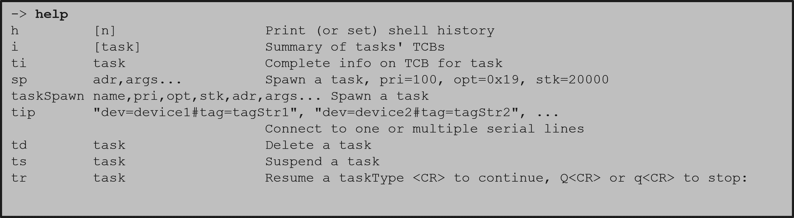

Configuring and setting up the VSB and VIP is known as platform development.
After this section you will be able to:
The kernel shell can be complicated. If you forget how to use a command, or what commands exist, you can use the help command.
Type help in the kernel shell for this list:
Use these commands for other help topics:
The kernel shell is not included by default. Like many other features you will need to add it to your VIP. This is to keep the initial project overhead low by not adding extra features that you might not want or need.
There are two ways to add the shell to your VIP: through the GUI or the CLI. Both require including the networked kernel shell or standalone kernel shell bundle. Here is how to add them:
First, open the Kernel Configuration inside your VIP Project.
When the Kernel configuration initially opens, it is set to the components view. You must switch to the bundle view in the bottom left.
Once in the bundle view, click on the "type filter text" and type "BUNDLE_STANDALONE_SHELL".
Right-click on the bundle and select "Add". Lastly, rebuild the VIP to apply the bundle to it.
In Workbench, right click on the VIP project and select "Open VxWorks version Development Shell". This will open an active terminal for you to use, which opens in the VIP directory.
In the terminal, you will need to use the "vxprj vip bundle add BUNDLE_STANDALONE_SHELL" command to apply the bundle to the project.
To verify that the correct bundle has been added you can use the "vxprj vip bundle list"command.
Lastly, to see all available bundles from the CLI, use the "vxprj vip bundle list all" command .
The kernel shell configuration variables control various settings in a shell session. These variables can be updated statically or dynamically.
Some of these variables are:
Updating the configuration variables dynamically depends on the interpreter you are using.
Configuring and setting up the VSB and VIP is known as platform development.

VxWorks is a robust operating system; it has many useful and powerful features for you to use in your project.

All VxWorks projects are different, but they all require hardware configuration.

Step-by-step instructions for running the VxWorks 6.9.3.1 BSP on the Zynq-7000 SoC.